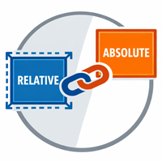
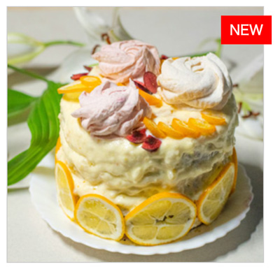
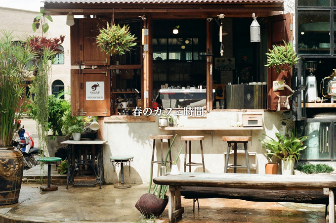
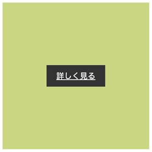

position を設定

- プロンプト例
positionを設定するポイント
「どこを基準に配置するのか」を理解することです。
① 基準（基点）を理解する
position の種類によって 位置の基準が変わります。
| position | 基準 |
|---|---|
| static | 通常の配置 |
| relative | 自分の元の位置 |
| absolute | 親要素 |
| fixed | 画面（ブラウザ） |
| sticky | スクロール位置 |
.box { position: relative; top: 20px; left: 30px; }
👉 元の位置から 下20px / 右30px 移動
② absolute を使う時は「親に relative」
これは CSSの超重要ルールです。
親 → relative
子 → absolute
.parent { position: relative; } .child { position: absolute; top: 0; right: 0; }
これをしない（親要素を基準にする指定）と、画面全体（body）が基準になってしまいます。
③ 移動は top / right / bottom / left
positionとセットで使います。
.box { position: absolute; top: 10px; right: 10px; }
👉 右上に配置
④ z-indexで重なり順を制御
positionを使うと 要素が重なることがあります。
.box { position: absolute; z-index: 10; }
数値が大きいほど 前面に表示
⑤ layoutには多用しない
昔は position でレイアウトしていましたが、現在は次を使います。
| 用途 | 使うもの |
|---|---|
| 横並び | Flexbox |
| グリッド | Grid |
| 微調整 | position |
まとめ（重要）
positionの理解の核心
relative → 基準を作る
absolute → その基準で配置
fixed → 画面固定
sticky → スクロール固定
position 練習問題
問題① NEWラベルを右上に表示

<div class="card"> <span class="label">NEW</span> <img src="img/cake.jpg" alt=""> </div>
【CSS】
.card { position: relative; width: 300px; border: 1px solid #aaa; } .card img { width: 100%; vertical-align: bottom; } .label { position: absolute; top: 10px; right: -10px; background: red; color: white; padding: 5px 10px; }
② 画像中央にテキスト

<header class="hero"> <img src="img/cafe.jpg" alt=""> <h1>春のカフェ時間</h1> </header>
【CSS】
* { margin: 0; padding: 0; box-sizing: border-box; } .hero { position: relative; } .hero img { max-width: 100%; vertical-align: bottom; } .hero h1 { position: absolute; top: 50%; left: 50%; transform: translate(-50%, -50%); color: white; font-family: serif; text-shadow: 0 0 4px #000; }
③ 画像左下キャプション
【HTML】
<body> <div class="photo"> <img src="img/montain.jpg" alt=""> <p class="caption">アマ・ダブラム</p> </div>
【CSS】
* { margin: 0; padding: 0; box-sizing: border-box; } .photo{ position:relative; } .photo img{ width:100%; } .caption{ position: absolute; bottom: 15px; left: 15px; background: rgba(0,0,0,0.6); color: #fff; padding: 6px; }
④ 右下TOPボタン
【HTML】
<a href="#" class="top-btn">TOP</a>
【CSS】
* { margin: 0; padding: 0; box-sizing: border-box; } .top-btn{ position: fixed; bottom: 20px; right: 20px; background: #333; color: #fff; padding: 16px 12px; border-radius: 50%; }
⑤ バナー中央ボタン

<div class="banner"> <img src="img/banner.jpg" alt=""> <a href="#" class="btn">詳しく見る</a> </div>
【CSS】
.banner{ position:relative; width:300px; height: 300px; background-color: #cbd683; } .btn{ position:absolute; top:50%; left:50%; transform:translate(-50%, -50%); background:#333; color:white; padding:10px 20px; }